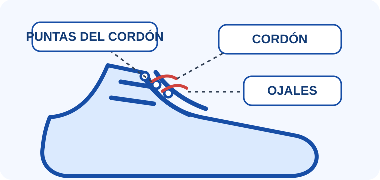
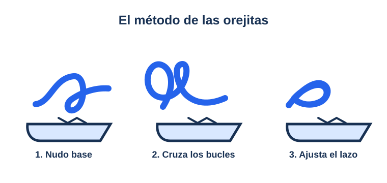

Partes del cordón
Mira el video guía
¿No puedes ver el video? Lee las instrucciones de esta lección. Ver el video en YouTube.
Conoce tu zapato y sus cordones
El cordón es la tira que pasa por los agujeros del zapato, llamados ojales. Sus puntas suelen tener una pieza pequeña que ayuda a pasar el cordón. Hay un cordón a cada lado. Antes de empezar, siéntate y apoya bien el zapato en el suelo.
Consejo: Pide ayuda a una persona adulta si tus cordones están muy apretados.
La X del nudo

El nudo base
Mira cómo hacer el nudo base
Sigue también los pasos escritos y el dibujo de esta lección. Ver el video en YouTube.
Cruza los cordones
Toma un cordón con cada mano. Cruza uno sobre el otro para formar una X. Pasa una punta por debajo del cruce y tira de ambas puntas hacia los lados. Así haces el nudo base, que mantiene el zapato sujeto.
Revisa que el nudo esté firme
- Apoya el zapato para que no se mueva.
- Sujeta una punta en cada mano.
- Jala suavemente hasta que el nudo quede firme, sin apretar demasiado.
Si el nudo queda flojo, vuelve a intentarlo con calma. Practicar varias veces ayuda a que tus dedos aprendan.
Recuerda el orden

Las dos orejas de conejo
Mira cómo formar el lazo
También puedes leer los pasos y practicar con calma. Ver el video en YouTube.
Piensa en lo que aprendiste
Después del nudo base, dobla cada cordón para formar un bucle. Sujeta un bucle en cada mano: son las dos orejas de conejo. Crúzalas, pasa una por el espacio y tira de ambas con cuidado. Luego responde las preguntas para repasar lo aprendido.
Repasa los pasos del lazo
Práctica: amarra tus ideas
Elige una respuesta para cada pregunta. ¡Tú puedes!
¡Completaste el curso!
Terminaste las lecciones y aprobaste la práctica. ¡Ya puedes amarrarte los zapatos! Cuando quieras, elige otro curso en Mi aprendizaje.
Salir del curso